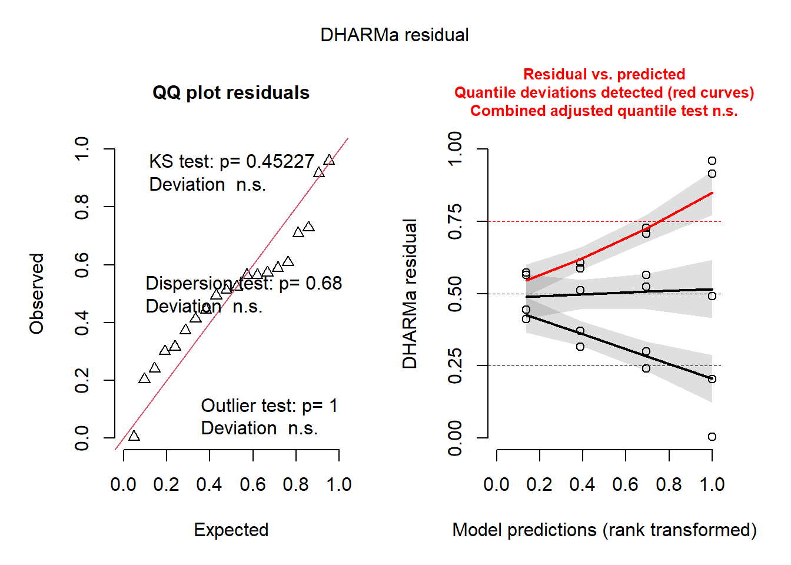

library (tidyverse)
library(tidyverse)
library(readxl)
library(ggplot2)
fung <- read_excel("dados-diversos.xlsx", "fungicida_vaso")Anova 2 fatores
Fazendo anova para mais de um fator
Carregar dados : fungicida_vaso: 2 fungicidas x 2 doses (quando é duas doses fica como fator qualitativo).
n de repetições: 5
n-sp : numero de espigas
dis-sp: numero de espigas doentes
Criando a variável percentual de espigas
mutate pra criar uma outra coluna para incidência
fung2 <- fung |>
mutate(inc = dis_sp / n_sp * 100)criando um gráfico para visualizar
com esse grafico conseguimos visualizar que provavelmente tem interação fungicida ~ dose
fung2 |>
ggplot(aes(x= treat, y =inc))+
geom_jitter(width = 0.1)+
facet_wrap(~dose)anova: considerando dois fatores qualitativos
interpretando anova: todos as fontes de variação foram significativas
m1 <- aov(inc ~ treat*dose, data = fung2)
summary(m1) Df Sum Sq Mean Sq F value Pr(>F)
treat 1 919.5 919.5 24.31 0.000151 ***
dose 1 920.9 920.9 24.34 0.000150 ***
treat:dose 1 747.7 747.7 19.76 0.000407 ***
Residuals 16 605.3 37.8
---
Signif. codes: 0 '***' 0.001 '**' 0.01 '*' 0.05 '.' 0.1 ' ' 1conferindo premissas com pacote performance
dados não foram homogêneos e nem homocedasticidade
library(performance)
check_normality(m1)Warning: Non-normality of residuals detected (p = 0.018).check_heteroscedasticity(m1)Warning: Heteroscedasticity (non-constant error variance) detected (p < .001).library(DHARMa)
plot(simulateResiduals(m1))
tranformando dados > Que transformação usa pra percentagem > log +0.5
conseguiu ter homcedasticidade
como a normalidade deu 0.05 consegue ainda fazer, o que é mais importante é a homocedasticidade
m1 <- aov(log(inc+0.5) ~ treat*dose, data = fung2)
summary(m1) Df Sum Sq Mean Sq F value Pr(>F)
treat 1 12.928 12.928 13.980 0.00179 **
dose 1 5.663 5.663 6.124 0.02491 *
treat:dose 1 5.668 5.668 6.129 0.02486 *
Residuals 16 14.796 0.925
---
Signif. codes: 0 '***' 0.001 '**' 0.01 '*' 0.05 '.' 0.1 ' ' 1check_normality(m1)Warning: Non-normality of residuals detected (p = 0.050).check_heteroscedasticity(m1)OK: Error variance appears to be homoscedastic (p = 0.180).plot(simulateResiduals(m1))
library(emmeans)#comparando médias, médias pra cada interação
means_m1 <- emmeans(m1, ~ treat | dose,
type= "response")
means_m1dose = 0.5:
treat response SE df lower.CL upper.CL
Ionic liquid 27.05 11.847 16 10.570 68.05
Tebuconazole 1.21 0.737 16 0.188 3.76
dose = 2.0:
treat response SE df lower.CL upper.CL
Ionic liquid 3.10 1.412 16 1.065 7.77
Tebuconazole 1.42 0.925 16 0.194 4.83
Confidence level used: 0.95
Intervals are back-transformed from the log(mu + 0.5) scale library(multcompView)
library(multcomp)
cld(means_m1)dose = 0.5:
treat response SE df lower.CL upper.CL .group
Tebuconazole 1.21 0.737 16 0.188 3.76 1
Ionic liquid 27.05 11.847 16 10.570 68.05 2
dose = 2.0:
treat response SE df lower.CL upper.CL .group
Tebuconazole 1.42 0.925 16 0.194 4.83 1
Ionic liquid 3.10 1.412 16 1.065 7.77 1
Confidence level used: 0.95
Intervals are back-transformed from the log(mu + 0.5) scale
Tests are performed on the log scale
significance level used: alpha = 0.05
NOTE: If two or more means share the same grouping letter,
then we cannot show them to be different.
But we also did not show them to be the same. #agora ao contrario
means_m1 <- emmeans(m1, ~ dose | treat,
type= "response")
means_m1treat = Ionic liquid:
dose response SE df lower.CL upper.CL
0.5 27.05 11.847 16 10.570 68.05
2.0 3.10 1.412 16 1.065 7.77
treat = Tebuconazole:
dose response SE df lower.CL upper.CL
0.5 1.21 0.737 16 0.188 3.76
2.0 1.42 0.925 16 0.194 4.83
Confidence level used: 0.95
Intervals are back-transformed from the log(mu + 0.5) scale library(multcompView)
library(multcomp)
cld(means_m1)treat = Ionic liquid:
dose response SE df lower.CL upper.CL .group
2.0 3.10 1.412 16 1.065 7.77 1
0.5 27.05 11.847 16 10.570 68.05 2
treat = Tebuconazole:
dose response SE df lower.CL upper.CL .group
0.5 1.21 0.737 16 0.188 3.76 1
2.0 1.42 0.925 16 0.194 4.83 1
Confidence level used: 0.95
Intervals are back-transformed from the log(mu + 0.5) scale
Tests are performed on the log scale
significance level used: alpha = 0.05
NOTE: If two or more means share the same grouping letter,
then we cannot show them to be different.
But we also did not show them to be the same. library(agricolae)
cv.model(m1)[1] 65.04818Anova com dois fatores para dados sem normalidade
library(readxl)
library(tidyverse)
micelial <- read_excel("dados-diversos.xlsx", "fungicida_vaso")
micelial2 <- micelial |>
mutate(inc = inf_seeds/n_seeds*100, rank_inc = rank(inc)) #transforma os dados da variavel resposta (inc)
rank_anova <- aov(rank_inc ~ treat*dose, data = micelial2)
summary(rank_anova) Df Sum Sq Mean Sq F value Pr(>F)
treat 1 220.00 220.00 14.204 0.00168 **
dose 1 105.34 105.34 6.801 0.01904 *
treat:dose 1 80.34 80.34 5.187 0.03684 *
Residuals 16 247.82 15.49
---
Signif. codes: 0 '***' 0.001 '**' 0.01 '*' 0.05 '.' 0.1 ' ' 1library(emmeans)
means_rank <- emmeans(rank_anova, ~ treat | dose)
library(multcompView)
library(multcomp)
cld(means_rank) #não usar as médias daqui, colocar médias reais e só usar a separação das médias . Se não der siginificativo a interação vc pode usar a anova sozinha, pra cada fator ou faz kruskal normal que separa pra um fator. dose = 0.5:
treat emmean SE df lower.CL upper.CL .group
Tebuconazole 6.90 1.76 16 3.17 10.6 1
Ionic liquid 18.00 1.76 16 14.27 21.7 2
dose = 2.0:
treat emmean SE df lower.CL upper.CL .group
Tebuconazole 6.75 1.97 16 2.58 10.9 1
Ionic liquid 9.75 1.61 16 6.34 13.2 1
Confidence level used: 0.95
significance level used: alpha = 0.05
NOTE: If two or more means share the same grouping letter,
then we cannot show them to be different.
But we also did not show them to be the same. fazendo outra coisa
library(MASS)
insects <- InsectSprays
b <- boxcox(lm(InsectSprays$count+0.1 ~1)) #depende da tabelinha do lang vc sabe qual é a transformação pra ver quan é o lambda
lambda <- b$x[which.max(b$y)]
lambda[1] 0.4242424insects$count2 <- (insects$count ^ lambda - 1) / lambda
insects$count2 [1] 3.903635 3.024469 6.043993 4.864268 4.864268 4.407118 3.903635
[8] 6.557185 5.484274 6.043993 4.864268 4.640760 4.161975 5.484274
[15] 6.219699 4.161975 5.285168 4.864268 5.484274 5.484274 5.863153
[22] 6.219699 3.024469 4.640760 -2.357143 0.000000 3.024469 0.805831
[29] 1.399509 0.000000 0.805831 0.000000 1.399509 -2.357143 0.000000
[36] 1.887150 1.399509 2.308577 4.407118 2.683787 1.887150 1.399509
[43] 2.308577 2.308577 2.308577 2.308577 0.805831 1.887150 1.399509
[50] 2.308577 1.399509 2.308577 1.399509 2.683787 0.000000 0.000000
[57] 1.399509 0.805831 2.683787 1.887150 4.161975 3.629951 5.078760
[64] 6.390651 5.078760 5.285168 4.640760 3.903635 7.033117 7.033117
[71] 6.719601 4.640760hist(insects$count)
#quando eu transformar os dados pra ver se tem normalidade ou não eu tenho que além de fazer o teste de heterocedasticidade visualizar a normalidade dos gráficos.
#no pacote agricolae colocar um ponto de interrogação pra ver qual o teste para separar as médias.